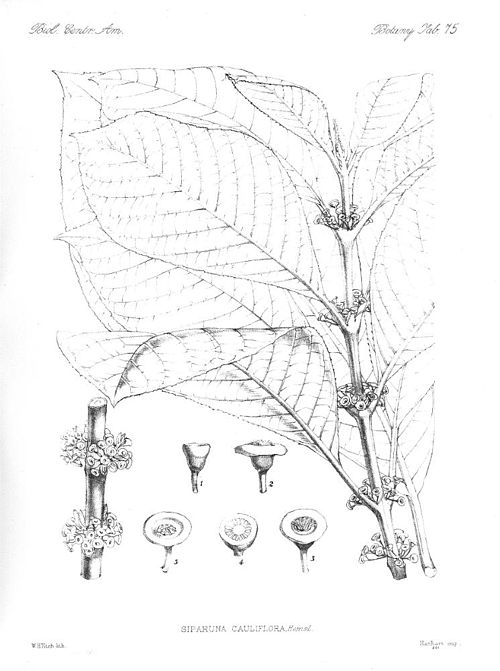

Siparunaceae
Siparunaceae is a family of aromatic evergreen trees and shrubs belonging to the order Laurales, within the early-diverging Magnoliid clade of flowering plants. The family is characterized by generally opposite, simple leaves, and small, unisexual flowers uniquely enclosed within a fleshy receptacle (hypanthium). It comprises two genera: the larger, Neotropical genus Siparuna, and the monotypic West African genus Glossocalyx.
Overview
Siparunaceae is a family of flowering plants firmly placed within the order Laurales, a key group within the Magnoliid clade. Magnoliids represent an ancient lineage of angiosperms, distinct from both monocots and eudicots. Siparunaceae comprises two genera: Siparuna, with about 60-75 species distributed throughout the Neotropics (Central and South America), and Glossocalyx, with a single species found in West Africa. This disjunct distribution points to an ancient origin for the family.
Members of Siparunaceae are typically aromatic evergreen trees or shrubs, often containing essential oils that give them a distinct scent when crushed. They are ecologically important components of tropical forests, particularly in the understory. The most distinctive feature of the family is its floral structure: the small, usually unisexual flowers are enclosed within a fleshy, urn-shaped or globe-shaped receptacle (often referred to as a hypanthium), which opens only by a small pore at the top. This structure also encloses the developing fruits.
The family is closely related to other families within Laurales, such as Monimiaceae (which historically included Siparunaceae) and Lauraceae (the laurel family). While not of major economic importance, some species are used locally in traditional medicine due to their aromatic compounds.
Quick Facts
- Scientific Name: Siparunaceae
- Common Name: (None widely accepted)
- Number of Genera: 2 (Siparuna, Glossocalyx)
- Number of Species: Approximately 60-75
- Distribution: Neotropics (Siparuna) and West Africa (Glossocalyx)
- Evolutionary Group: Magnoliids - Laurales
Key Characteristics
Growth Form and Habit
Members are evergreen trees or shrubs. They are typically strongly aromatic due to the presence of spherical ethereal oil cells in most tissues.
Leaves
Leaves are usually arranged oppositely (decussate), rarely alternate or whorled. They are simple, with margins that are typically entire (smooth) or sometimes toothed (serrate or dentate). Leaves lack stipules (exstipulate) and often possess pellucid dots (translucent glands containing essential oils).
Inflorescence
Flowers are borne in axillary or sometimes terminal inflorescences, usually structured as cymes, fascicles (clusters), or panicles.
Flowers
The floral structure is highly distinctive. Flowers are generally small, radially symmetrical (actinomorphic), and typically unisexual (plants are usually dioecious or monoecious). The most notable feature is that the floral parts are enclosed within a fleshy, urn-shaped or globose receptacle (hypanthium), which has a small opening (ostiole) at the apex.
- Receptacle: This enclosing structure is fleshy and often subtended by bracts.
- Perianth (Tepals): Usually 4-6 (sometimes more) small, scale-like tepals are situated around the ostiole at the rim of the receptacle; they can be inconspicuous or sometimes absent.
- Androecium (in male flowers): Stamens vary in number from 1 to numerous (>70), located inside the receptacle. Filaments are usually short. Anthers may dehisce via longitudinal slits or, characteristic of many Laurales, via valves. Staminodes (sterile stamens) may also be present.
- Gynoecium (in female flowers): Carpels are few to numerous (3 to >30), distinct and free (apocarpous), situated at the base inside the receptacle. Each carpel contains a single ovule and has its own style, which may be free or fused towards the apex near the ostiole.
Fruits and Seeds
The fruit is an aggregate fruit consisting of multiple small drupes or achenes (one developing from each carpel), which remain enclosed within the fleshy, accrescent (enlarging) receptacle. At maturity, the fleshy receptacle may split open irregularly, often revealing the brightly colored fruitlets inside, likely facilitating animal dispersal.
Chemical Characteristics
The family is rich in ethereal oils (essential oils), various alkaloids (such as aporphine alkaloids), flavonoids, and other aromatic compounds, contributing to their characteristic strong scents (often lemon-like or spicy).
Field Identification
Identifying members of Siparunaceae relies on recognizing their aromatic nature, leaf arrangement, and especially the unique structure enclosing the flowers and fruits:
Primary Identification Features
- Habit: Aromatic evergreen trees or shrubs.
- Leaves: Usually opposite, simple, entire or toothed, exstipulate. Often have pellucid dots (use hand lens). Strong scent when crushed.
- Flowers/Fruits: The key feature is the presence of a fleshy, urn-shaped or globose receptacle (hypanthium) that encloses the small, unisexual flowers (visible through a small top opening) and later encloses the aggregate of drupe/achene fruitlets. Mature receptacles may split open.
- Distribution: Found in the Neotropics (Siparuna) or West Africa (Glossocalyx).
Secondary Identification Features
- Scent: Strong lemon-like, spicy, or sometimes unpleasant aroma when leaves are crushed.
- Flower Details (if visible): Small tepals around the opening of the receptacle; numerous stamens or separate carpels visible inside (requires dissection or close look).
- Mature Fruit Display: Look for fleshy receptacles splitting to reveal colorful inner fruitlets.
Seasonal Identification Tips
- Year-round: Aromatic evergreen foliage with opposite, simple leaves is a constant feature.
- Flowering/Fruiting: Can occur throughout the year in tropical regions. The fleshy receptacles enclosing flowers or fruits are the most diagnostic feature whenever present.
Common Confusion Points
- Monimiaceae: Very closely related (Laurales), also aromatic trees/shrubs often with opposite leaves and flowers sometimes enclosed in receptacles. Distinctions often require technical details: Siparunaceae flowers are more consistently unisexual, anther dehiscence is often valvate (vs. often slits in Monimiaceae), and there are subtle differences in receptacle and stamen morphology.
- Lauraceae (Laurel family): Also aromatic Laurales, but leaves often alternate, flowers are small, 3-merous, open (not enclosed), ovary is superior (single pistil), and fruit is a single drupe often in a cupule.
- Myrtaceae (Myrtle family): Aromatic trees/shrubs, often opposite simple leaves with pellucid dots. Distinguished by having open flowers with numerous conspicuous stamens and inferior ovaries.
- Rubiaceae (Coffee family): Trees/shrubs with opposite simple leaves. Easily distinguished by the presence of interpetiolar stipules and inferior ovaries.
Field Guide Quick Reference
Look For:
- Aromatic tree/shrub
- Leaves usually opposite, simple, exstipulate
- Strong scent when crushed
- Flowers/fruits enclosed in fleshy receptacle with top opening
- Aggregate of drupes/achenes inside receptacle
- Neotropics or West Africa
Key Distinctions:
- Flowers enclosed (vs. open in Lauraceae, Myrtaceae)
- No stipules (vs. Rubiaceae)
- Ovary effectively superior, apocarpous inside receptacle (vs. inferior in Myrtaceae, Rubiaceae; syncarpous superior in Lauraceae)
- Details differ from Monimiaceae (unisexual flowers common, anther valves common)
Notable Examples
The family comprises two distinct geographical genera:

Siparuna gesnerioides
(No common English name)
A representative species of the large Neotropical genus. Typically a shrub or small tree found in rainforest understories. Features opposite, simple leaves that are often somewhat hairy (pubescent) and strongly aromatic when crushed. Produces the characteristic fleshy receptacles enclosing small unisexual flowers, followed by the aggregate fruit structure.

Siparuna guianensis
Capitiú, Negramina
Another common and widespread species in Central and South America, often found in secondary forests or disturbed areas. It's a shrub or tree known for its strong, often lemon-like scent. Leaves are opposite and variable in shape and hairiness. Used in some local traditional medicines.

Glossocalyx brevipes
(No common English name)
The sole species in its genus, endemic to the rainforests of West Africa (e.g., Gabon, Cameroon). It is a shrub or small tree, sharing the family's characteristic aromatic nature, opposite simple leaves, and flowers enclosed within a fleshy receptacle. Its distinct geographical location highlights the ancient split within the family.
Phylogeny and Classification
Siparunaceae is a member of the order Laurales, which is one of the major orders within the Magnoliid clade. Magnoliids (including orders Laurales, Magnoliales, Piperales, Canellales) represent an early-diverging branch of the angiosperm evolutionary tree, distinct from both monocots and eudicots. They often retain features considered ancestral in flowering plants, such as ethereal oil cells and simple flower structures.
Within Laurales, Siparunaceae is closely related to families like Gomortegaceae (a monotypic family from Chile) and Atherospermataceae, and slightly more distantly to Monimiaceae (where Siparuna and Glossocalyx were sometimes previously placed) and Lauraceae (the laurel family). The family itself clearly divides into two main clades: the Neotropical genus Siparuna and the African genus Glossocalyx, reflecting an ancient vicariance event likely related to the breakup of Gondwana.
Position in Plant Phylogeny
- Kingdom: Plantae
- Clade: Angiosperms (Flowering plants)
- Clade: Magnoliids
- Order: Laurales
- Family: Siparunaceae
Evolutionary Significance
The Siparunaceae family is significant for:
- Representing Magnoliids/Laurales: Provides insights into the diversity and characteristics of these early-diverging angiosperm lineages.
- Ancestral Traits: Exhibits features like ethereal oil cells, apocarpy (free carpels), and sometimes valvate anther dehiscence, common in Magnoliids.
- Unique Floral Morphology: The evolution of enclosing flowers and fruits within a fleshy receptacle is a notable specialization within Laurales.
- Biogeography: The striking Neotropical/African disjunct distribution of its two genera provides compelling evidence for ancient Gondwanan origins and subsequent continental drift.